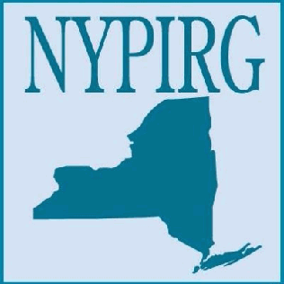
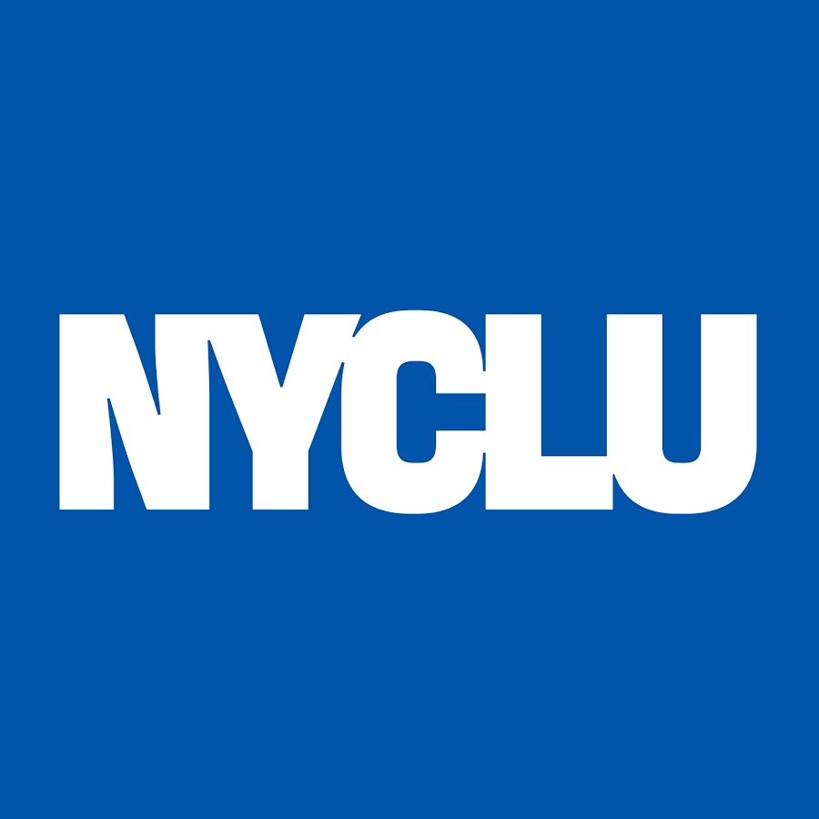
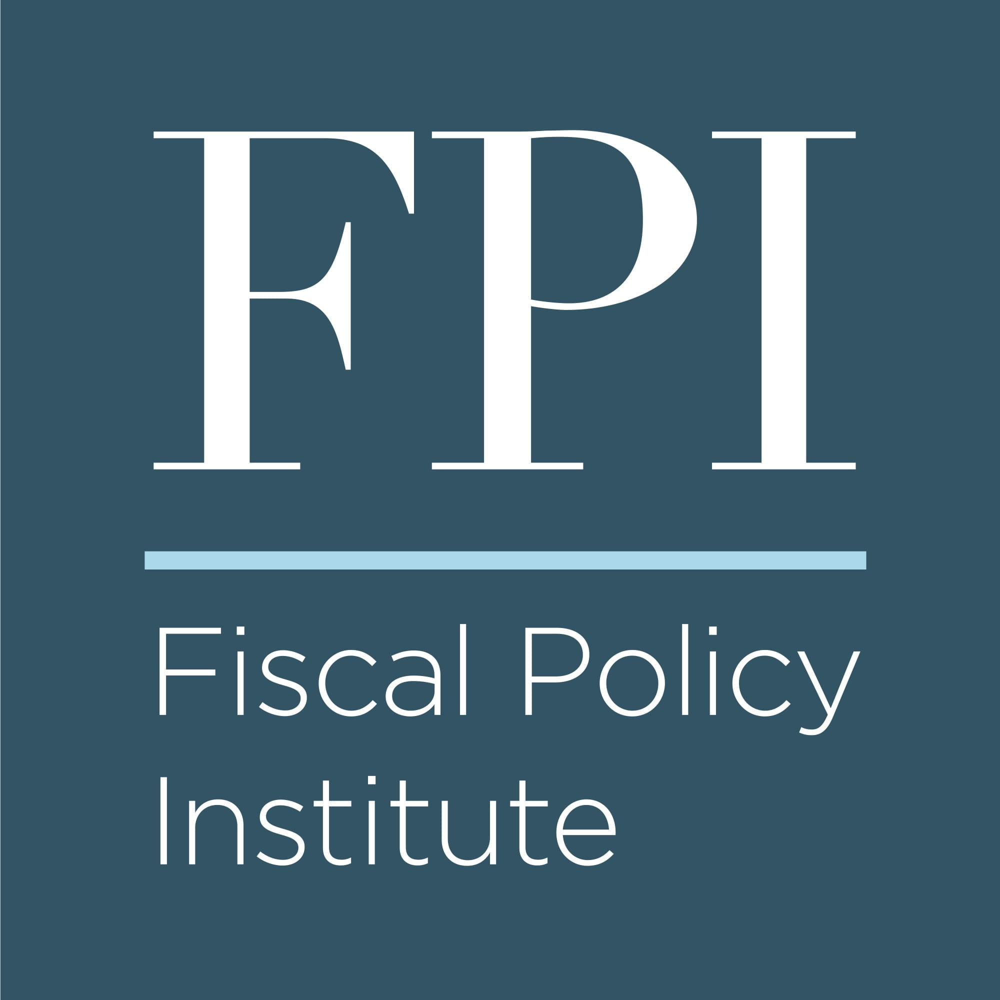

These are all the interest groups that support us.

The New York Public Interest Research Group (NYPIRG) is a non-partisan, nonprofit, research and public education organization, which educates hundreds of thousands of New Yorkers from all parts of the state, helping to bring the voices of average New Yorkers to public policy debates.
NYPIRG examines important issues, produces studies, and engages New Yorkers in public education campaigns to produce policies that strengthen democracy, enhance the rights of consumers and voters, and protect the environment and public health.

New York Civil Liberties Union (NYCLU) is one of the nation’s foremost defenders of civil liberties and civil rights. Founded in 1951 as the New York affiliate of the American Civil Liberties Union, it is a not-for-profit, nonpartisan organization with eight chapters and regional offices and nearly 50,000 members across the state.
Its mission is to defend and promote the fundamental principles and values embodied in the Bill of Rights, the U.S. Constitution, and the New York Constitution. Among the most fundamental principles are those protecting human dignity and the rule of law.

The Fiscal Policy Institute (FPI) is an independent, nonpartisan, nonprofit think tank that advances sound and equitable fiscal policy to strengthen New York’s economy through research, analysis and strategic communications and works to create a strong economy in which prosperity is broadly shared.
The Fiscal Policy Institute co-hosts the NYCPF, a new research and publishing network dedicated to governance in New York City. The forum convenes experts from academia, government, labor, business, social movements, and beyond, to discuss, debate, and write on the most pressing issues facing New York City. NYCPF is a project of FPI, the Climate and Community Institute, and Phenomenal World.